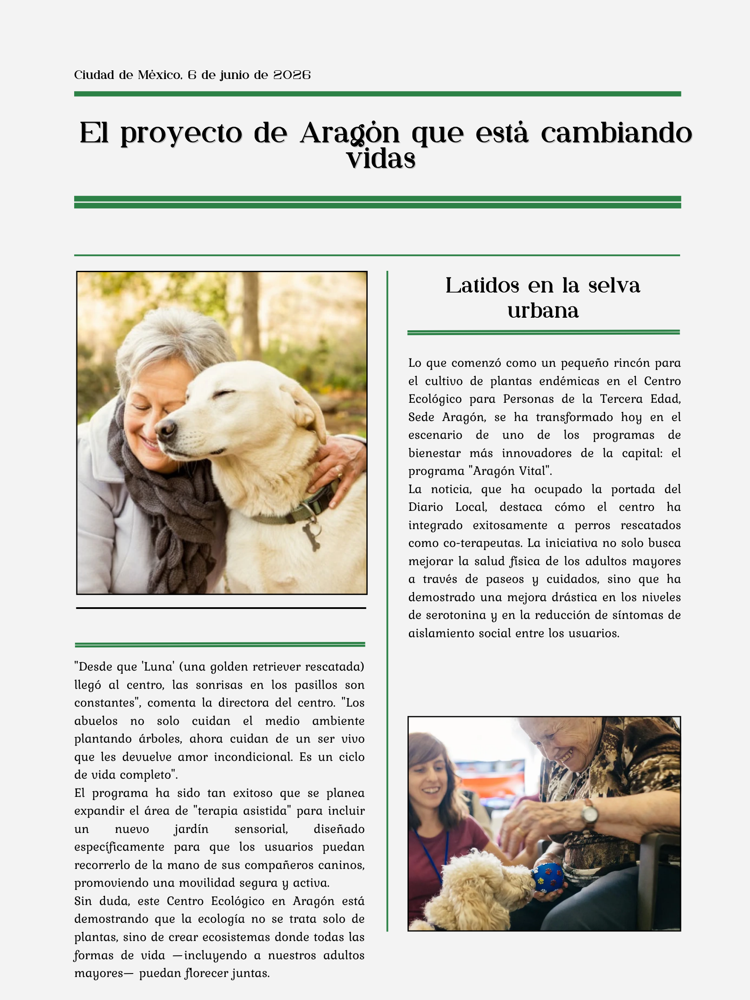

Latidos en la selva urbana
El Centro Ecológico Sede Aragón ha dado un paso gigante con el programa "Aragón Vital". Hemos integrado la terapia asistida con perros rescatados, mejorando significativamente el bienestar emocional de nuestros adultos mayores.
La iniciativa, que ha captado la atención del Diario Local, busca fomentar la salud física a través de paseos y cuidados, demostrando que en nuestro centro todas las formas de vida florecen juntas. ¡Ven a conocer a nuestros nuevos co-terapeutas!
Fuente: Diario Local | Sección Comunidad